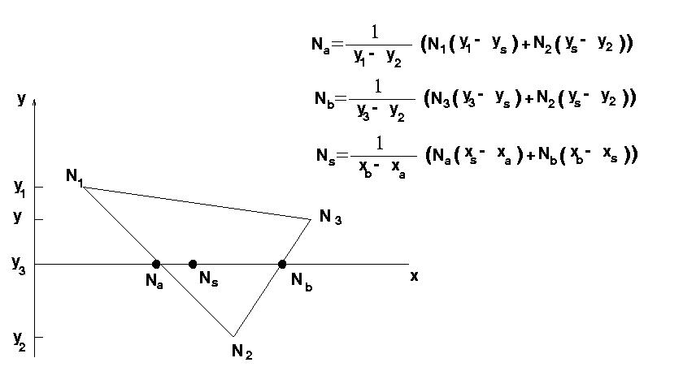

Aquest mètode interpola el vector normal en un punt (píxel) interior a un polígon en funció de les normals dels seus vèrtexs i calcula l'equació d'il·luminació en aquest punt amb la seva normal interpolada. La interpolació de normals es realitza en temps de rasterització de la manera que expressa la figura:
|  |
L'avantatge d'aquest mètode és que elimina els inconvenients de la
interpolació de colors respecte a les reflexions especulars que
s'obtenia amb Gouraud a l'interpolar normals i no il·luminació
directament. Els principals inconvenients són un cost computacional
més elevat donat que igualment cal calcular el model d'il·luminació en
cada punt i, per tant, efectuar el còmput d'angles entre vectors. Per
aquest motiu usualment no es troba implementat en llibreries gràfiques
3D i s'utilitza únicament per visualitzar objectes aproximats per
cares planes amb tècniques de visualització com ray-casting.